1
Check the temperature
- In the software, check Temp.
- The printer is warm enough from 31 °C, up to about 34–35 °C.
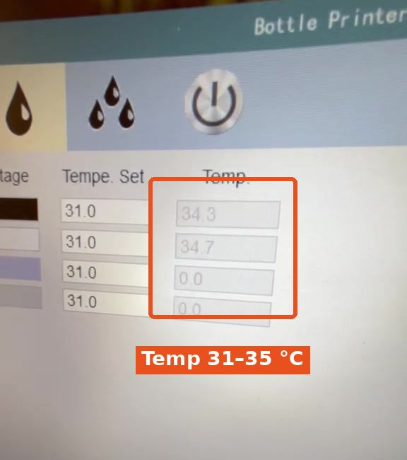
How to print an order on Bottle 1 or Bottle 2. Do part 1 first: starting the printer.

Do this while the printer is warming up.
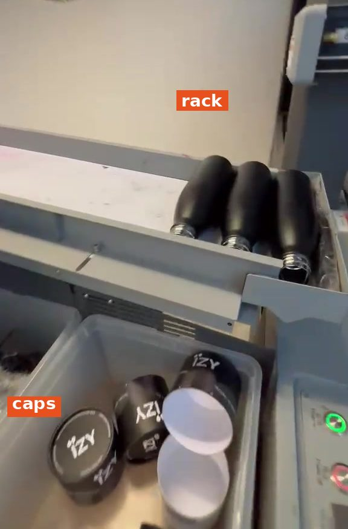
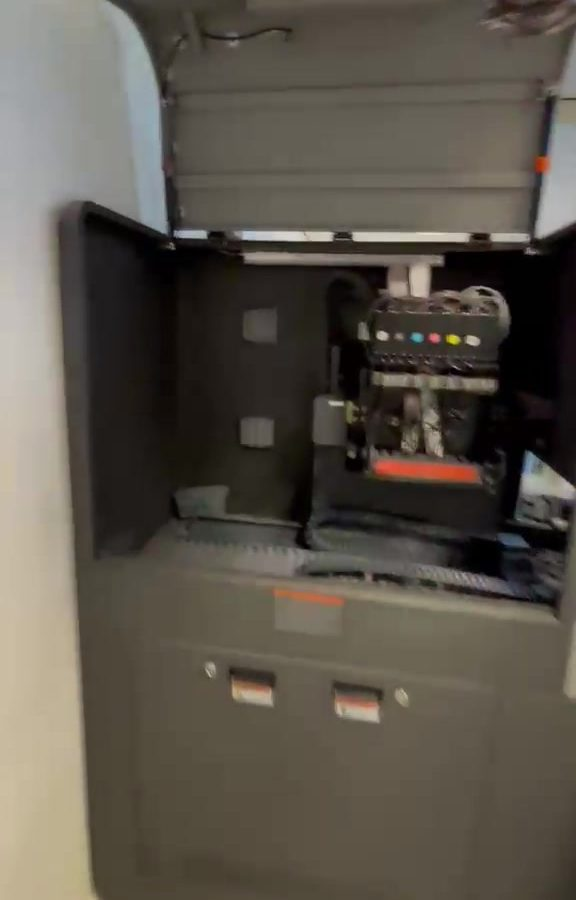
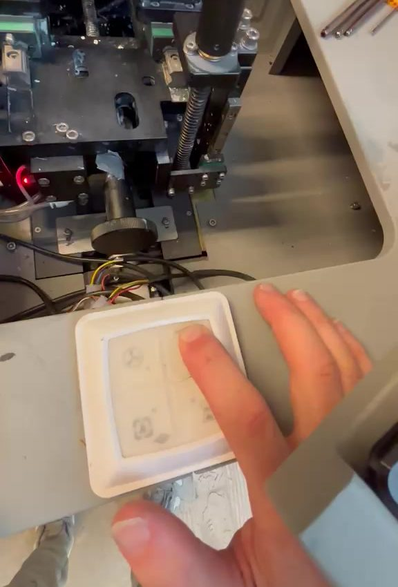
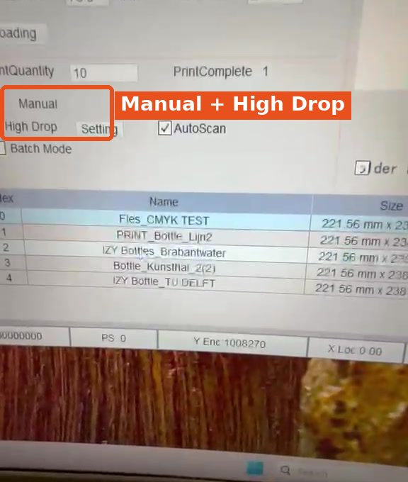
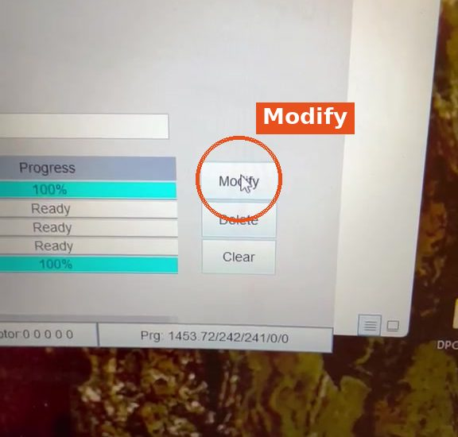
Always check this:
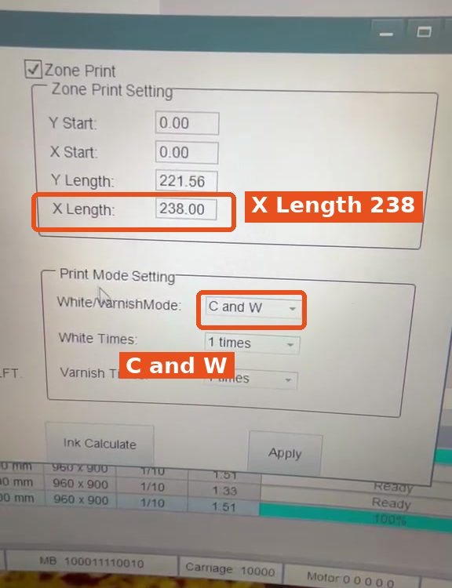
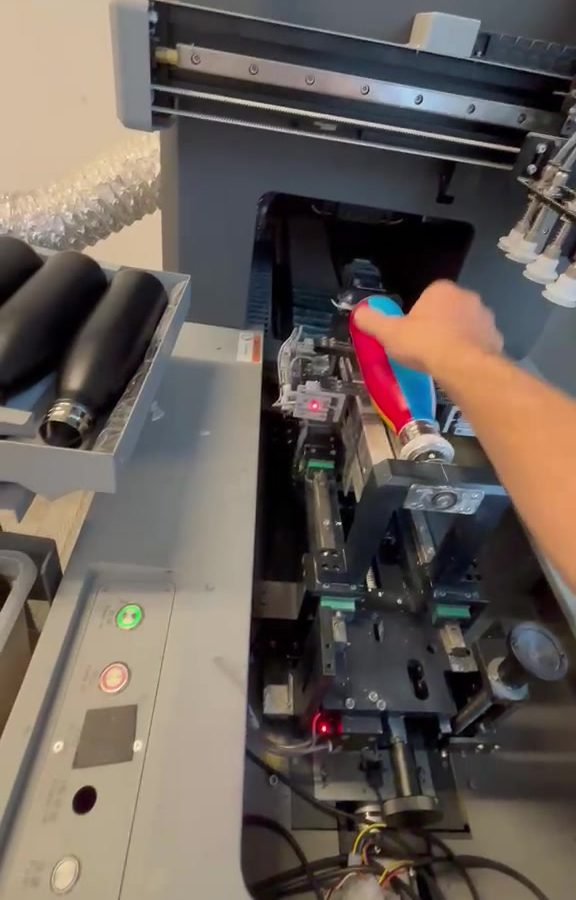
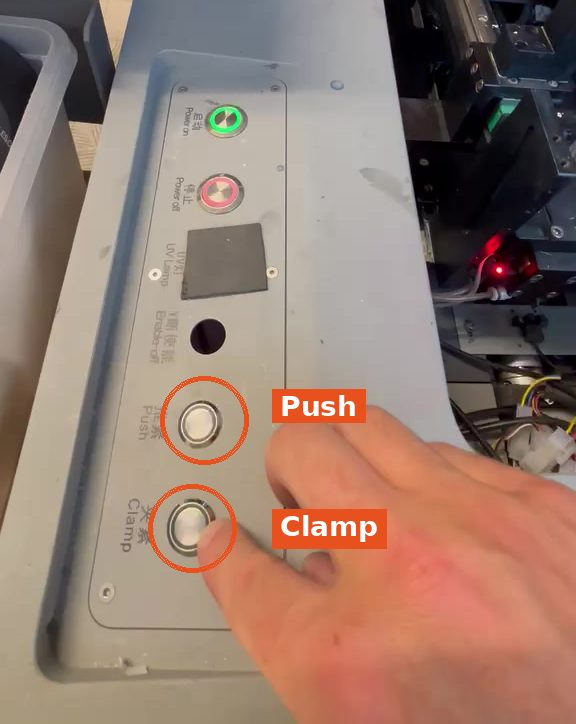
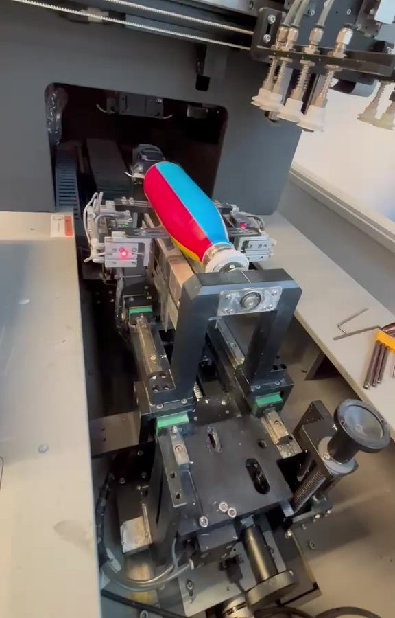
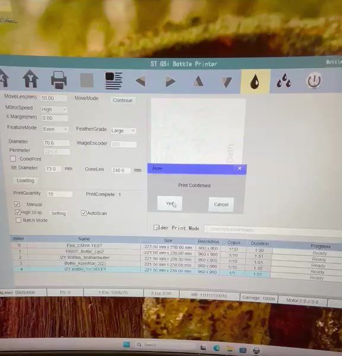

As soon as the bottle comes out of the printer, do the reverse:
In: Push → Clamp. Out: Clamp → Push.